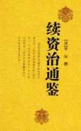

|
续资治通鉴，220卷，清毕沅编。此书付刻未及半，毕沅生前仅初刻103卷，毕家因贪污遭籍没而止，书稿散佚，桐乡冯集梧买得全稿补刻成220卷。上接《资治通鉴》，起宋太祖建隆元（960）年，下迄元顺帝至正二十八（1368）年，共411年。 《续通鉴》与《资治通鉴》有不少出入，此书大量引用旧史原文，叙事详而不芜；仅有取舍剪裁，而无类似温公的改写熔炼，亦无“毕沅曰”等各家史论。作者虽挂名毕沅，然名家钱大昕、邵晋涵、章学诚、洪亮吉、黄仲则等均参预其事，此书实成于众人之手。梁启超对该书评价极高，认为“有毕《鉴》则各家续《鉴》皆可废也”。 （2020-11-20整理） |
 |